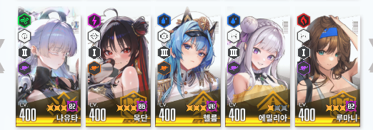
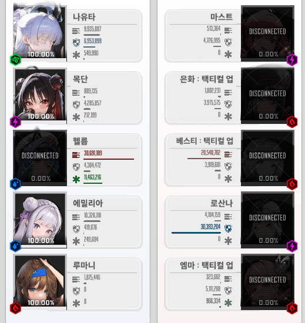
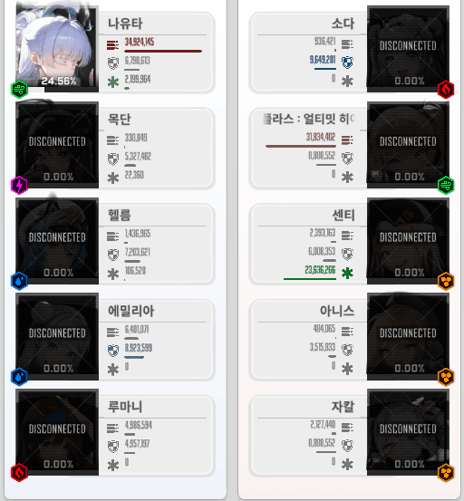

선요약
레후 빼고 목단 추가
버충도 레후와 목단의 버충 차이가 그렇게 심하지 않아서
레후 없어도 충분히 150f 안쪽으로 땡길 수 있음

레후 1버의 강력한 공버프에 비해 목단 1버는 다소 아쉽지만
등가교환으로 받뎀감과 방증을 챙길 수 있음
즉 공버프는 낮아지겠지만 헬름 생존력 + 파티 유지력이 올라감

vs 옛날 앱솔덱
애플로라 + 앱솔이 아닌 이상 한틱 차이로 목단 버스트가 켜지고 헬름이 버티게 됨
로산나 벤데타도 목단 + 헬름이 흡수
유지력이 약한 앱솔덱은 터질 수 밖에 없음

vs 소풍자
에엥 이걸로 소풍자 이기는 건 개억지 아니에요?
그냥 운빨로 소다 스턴을 피한 거겠죠!
ㅇㅇ 아님
소풍자도 최소 150f의 빠른 덱이지만 나도 뒤쳐지지 않는 패스트덱임
소풍자가 아무리 빨라도 동시 발동이다
즉 소다의 버스트 스턴 2개 중 1개는 무조건 광역 도발이 켜지는 목단이 먹고
나머지 하나가 어디에 꽂히던 그리 큰 상관은 없음
왜냐면 난 덱에서 레듀듀를 쳐내고
나유타를 제외한 2버를 단 하나도 넣지 않았기 때문임

즉 목단 나유타가 스턴을 먹고 아군이 다 뒤져도 스턴 풀린 나유타가 빅장을 날림
1버는 동시 발동이니까
나유타 불굴은 9초가 끝 아니냐고?
그 9초가 전투 시작하고 5초 지난 센티 회복이 먼저 끝난 후에도 빅장을 두대는 더 날리는 시간임
소다 + 센티 + 풍플라스덱은 버스트 한번 그으면 뒤가 없다
그리고 설령 나유타가 스턴 먹고 히어로일섬 맞아서 풀버스트 못키고 홀로 남았다고 해도
목단 받뎀감 + 공증은 남아있고
나유타도 자체적으로 3초마다 25%씩 회복하고 공격력이 5초간 30% 증가함
풍플라스 나오고 조금 자리가 애매해진 목단에게
나유타덱 레후 대타라는 자리는 충분히 취직할만한 좋은 곳이라고 생각함
레듀듀? 아아... 울라리에선 딜 잘나온도르 호소인 녀석 말인가?
이제 더이상 챔레나에 평범한 공버프 1버싸개의 자리는 없다
주년 스킨이나 부여잡고 썩 꺼지도록
끗
길기만 한 똥글 읽어주셔서 감사합니다